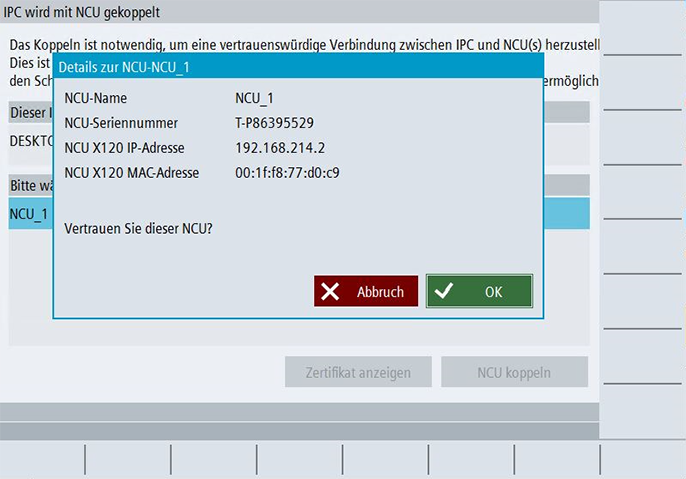

Einleitung
Wenn Sie eine NCU mit einem IPC koppeln möchten, können Sie den Dialog "NCU koppeln" nutzen.
Das Koppeln ist notwendig, um eine vertrauenswürdige Verbindung zwischen IPC und NCU(s) herzustellen. Dies ist notwendig, um Sicherheitsfunktionen in einem verteilten System zu verwenden, da es den Schutz der Vertraulichkeit und Integrität in der Kommunikation zwischen IPC und NCU ermöglicht. Ein simpler Austausch des IPCs und somit der Missbrauch von Daten der NCU wird damit verhindert.
Voraussetzung
-
Mit aktiver Benutzerverwaltung: Sie verfügen über die Rolle "Security Admin" oder die Zugriffsstufe 2 (Service).
ODER
-
Ohne aktive Benutzerverwaltung: Sie verfügen mindestens über die Zugriffsstufe 3 (Anwender).
-
Die NCU, die Sie mit dem IPC koppeln möchten, befindet sich im Status "Koppeln möglich". Dazu muss die zu koppelnde NCU vorher korrekt konfiguriert werden.
Vorgehensweise
-
Im Bedienbereich "Inbetriebnahme" rufen Sie die Übersichtsseite des Koppelns über die Softkeys "Security > Vertrauenswürdige Geräte" auf.
-
Selektieren Sie eine NCU mit dem Status "Koppeln möglich".
-
Klicken Sie auf "NCU koppeln".
-
Der Dialog zum Datumsabgleich von IPC und NCU öffnet sich. Die Datumsanzeige von IPC und NCU muss synchron sein, da sonst die generierten Zertifikate möglicherweise ungültig sind. Bestätigen Sie den Dialog mit "OK", wenn die Daten der Komponenten synchron sind.
Alternativ brechen Sie den Dialog ab und synchronisieren Sie zunächst die Einstellungen für Datum beider Geräte, bevor Sie den Dialog erneut starten.
Das Datum der NCU können Sie in SINUMERIK Operate über "Inbetriebnahme > HMI > Datum Uhrzeit" einstellen.
Das Datum des IPC können Sie in den Windows Systemeinstellungen einstellen.
-
Die Daten der konfigurierten NCU öffnen sich. Bestätigen Sie, dass Sie dieser NCU vertrauen, indem Sie die gezeigten Daten verifizieren (NCU Name und Seriennummer) und mit "OK" bestätigen".

NCU koppeln
-
Zum Abschluss des Koppel-Vorgangs müssen Sie das Hersteller-Passwort der NCU eingeben, um sich als Berechtigter zu authentifizieren und somit den Kopplungsvorgang auf der NCU zu autorisieren.
-
Bestätigen Sie das Passwort mit "OK".
-
Wenn die Option "SD-Karte verschlüsseln" bereits aktiviert wurde, wird die SD-Karte anschließend verschlüsselt. Bestätigen Sie die Sicherheitsabfrage zur SD-Karten-Verschlüsselung mit "Ok". Die SD-Karte der NCU wird verschlüsselt. Ein Neustart des Systems wird ausgeführt.
|
Ergebnis
-
Die ausgewählte NCU hat nun mit dem entsprechenden IPC eine vertrauenswürdige Verbindung aufgebaut und Sie können die Security-Funktionen in einem verteilten System (IPC und NCU) nutzen.
-
Die ausgewählte NCU ist im Status "Gekoppelt".
-
Beim Koppeln wurde ein Kopplungszertifikat für die NCU erzeugt. Das Kopplungszertifikat der NCU kann auf der Übersichtsseite über "Zertifikat anzeigen" angezeigt werden.
-
Beim Koppeln wurde ein Kopplungszertifikat für den IPC erzeugt. Das Kopplungszertifikat des IPC kann auf der Übersichtsseite über "Zertifikat anzeigen" angezeigt werden.